Mapping in R with {sf}
Using {sf}
R is an open source software package, and more and more, it has become useful for analysis, visualization, and even writing. More recently, it has become a powerful tool for working with spatial data, making maps, etc. This is because it’s free (open source), it can do nearly everything that a GUI type program can do (e.g., ArcGIS), and you can write a script to do the same analysis many times over, saving time on repetitive tasks and making it clear how you did what you did.
There are a variety of spatial mapping/plotting packages in R. Currently, there are two main approaches to read/create spatial data in R. The rgdal package, and the sf package. We’re going to use the sf approach because it’s simpler and typically faster to work with, and spatial objects are simply data.frames, which makes it much easier to manipulate data.
Install/Load packages
Next we need to install our packages (if you haven’t already). If you have already done this step, great, take a minute to look at the sf webpage and the various vignettes that are available (see Articles tab).
# install packages if you haven't already
install.packages(c("viridis", "sf","mapview", "tmap","USAboundaries"))
# load packages or "libraries"
library(tidyverse) # wrangling/plotting tools
library(viridis) # nice color palette
library(sf) # newer "simple features" spatial package
library(mapview) # interactive web mapping
library(tmap) # static mapping
library(USAboundaries) # data for USA boundariesRead in Data
First we need to read in some data. We’ll be using the same data from earlier in the lessons…see the Github repository](https://github.com/SCCWRP/CABW2018_R_training/tree/master/data). Let’s use the read_csv function from the tidyverse (readr) package to read in our .csv’s. We can either download these files directly from the website, or we can use a downloaded file on our computer, following the data management/organization tips we spoke about earlier (i.e., using RStudio Projects, and always keep data in a data folder.
Read Data from Local RStudio Project
This assumes you’ve already downloaded the data from the website or from the Github data repository.
# if reading locally (from your data folder in you RStudio project):
ascidat <- read_csv("data/ascidat.csv")
cscidat <- read_csv("data/cscidat.csv")
latlons <- read_csv("data/latlon.csv")Read Data from Website
This downloads data directly from the website (so you need to be connected to the internet).
# if reading from web:
ascidat <- read_csv("https://raw.githubusercontent.com/SCCWRP/CABW2018_R_training/master/data/ascidat.csv")
cscidat <- read_csv("https://raw.githubusercontent.com/SCCWRP/CABW2018_R_training/master/data/cscidat.csv")
# read in latitude/longitude data for sites:
#latlons <- read_csv("https://raw.githubusercontent.com/SCCWRP/CABW2018_R_training/master/data/latlon.csv")
latlons <- read_csv(file = "https://raw.githubusercontent.com/SCCWRP/CABW2018_R_training/master/data/latlon.csv")Let’s take a look at our dataset, and in particular, let’s look at the coordinates we’ll be using to make our data “spatial”. The latlons dataset just has 3 columns. How many rows?
If we look at a summary of the latitude and longitude, what do we notice? Why might it be important to look at the latitude and longitude data1 before plotting?
glimpse(latlons)## Rows: 1,613
## Columns: 3
## $ StationID <chr> "000CAT148", "000CAT228", "102PS0139", "103CDCHHR", "103FC1106", "103FCA168", "103KLCMSR", "103PS0217", "103RDCBCC", "103WER026", "103WER02…
## $ New_Lat <dbl> 39.07523, 39.07307, 41.99595, 41.78890, 41.93407, 41.64962, 41.85546, 41.68691, 41.95481, 41.84999, 41.80977, 41.85649, 41.61202, 41.30818,…
## $ New_Long <dbl> -119.8994, -119.9201, -122.9597, -124.0778, -124.1081, -124.0912, -123.8521, -124.0835, -124.0625, -124.0332, -124.1121, -123.9119, -123.29…summary(latlons)## StationID New_Lat New_Long
## Length:1613 Min. :32.55 Min. :-124.1
## Class :character 1st Qu.:34.10 1st Qu.:-121.8
## Mode :character Median :36.55 Median :-119.3
## Mean :36.46 Mean :-119.8
## 3rd Qu.:38.75 3rd Qu.:-117.8
## Max. :42.00 Max. :-116.2Tidy the Spatial Data
In case there is something amiss, such as values that aren’t negative, a quick fix is to run the following code to make sure all longitude values are negative.
Make Data Spatial
Once we are sure our data are ok and things have been vetted, let’s make the data spatial and create a few quick test plots. To make the data spatial using sf, we need to know two important pieces…
- Which columns contain the spatial coordinates in (either name or column number)?
- What projection or EPSG (CRS, SRID, etc) is the data in/or that we want to use?
Projections/Transformations
Spatial data is tricky, because different parts of the world work in different “datum” or “projections”. The best description of how these work requires imagining draping a square tablecloth over a round ball (earth). The tablecloth isn’t quite big enough to cover the whole globe, so near the edges of the tablecoth there’s stretching. At the center of the tablecloth there’s very little stretching. When working with spatial data, we want a projection that is going to give us the least amount of stretching for the location/region we’re working in. A few common projections used in California for state/federal work:
Make Spatial with sf
Here we read in the data and add a CRS projection.
# make data sf object:
df_sf <- st_as_sf(latlons,
# coords = c("Lon", "Lat"), # can use numbers here too
coords = c(3, 2), # can use numbers here too
remove = F, # don't remove these lat/lon cols from df
crs = 4326) # add projection (this is WGS84)Transform or convert to different projection?
Now that our data is in this format, it’s pretty easy to transform/convert to another spatial projection. Here we can switch the projection over to something different:
# check CRS first:
st_crs(df_sf)## Coordinate Reference System:
## User input: EPSG:4326
## wkt:
## GEOGCRS["WGS 84",
## DATUM["World Geodetic System 1984",
## ELLIPSOID["WGS 84",6378137,298.257223563,
## LENGTHUNIT["metre",1]]],
## PRIMEM["Greenwich",0,
## ANGLEUNIT["degree",0.0174532925199433]],
## CS[ellipsoidal,2],
## AXIS["geodetic latitude (Lat)",north,
## ORDER[1],
## ANGLEUNIT["degree",0.0174532925199433]],
## AXIS["geodetic longitude (Lon)",east,
## ORDER[2],
## ANGLEUNIT["degree",0.0174532925199433]],
## USAGE[
## SCOPE["unknown"],
## AREA["World"],
## BBOX[-90,-180,90,180]],
## ID["EPSG",4326]]# change CRS using st_transform
df_sf_albers <- st_transform(df_sf, crs=3310)
# check that it changed
st_crs(df_sf_albers)## Coordinate Reference System:
## User input: EPSG:3310
## wkt:
## PROJCRS["NAD83 / California Albers",
## BASEGEOGCRS["NAD83",
## DATUM["North American Datum 1983",
## ELLIPSOID["GRS 1980",6378137,298.257222101,
## LENGTHUNIT["metre",1]]],
## PRIMEM["Greenwich",0,
## ANGLEUNIT["degree",0.0174532925199433]],
## ID["EPSG",4269]],
## CONVERSION["California Albers",
## METHOD["Albers Equal Area",
## ID["EPSG",9822]],
## PARAMETER["Latitude of false origin",0,
## ANGLEUNIT["degree",0.0174532925199433],
## ID["EPSG",8821]],
## PARAMETER["Longitude of false origin",-120,
## ANGLEUNIT["degree",0.0174532925199433],
## ID["EPSG",8822]],
## PARAMETER["Latitude of 1st standard parallel",34,
## ANGLEUNIT["degree",0.0174532925199433],
## ID["EPSG",8823]],
## PARAMETER["Latitude of 2nd standard parallel",40.5,
## ANGLEUNIT["degree",0.0174532925199433],
## ID["EPSG",8824]],
## PARAMETER["Easting at false origin",0,
## LENGTHUNIT["metre",1],
## ID["EPSG",8826]],
## PARAMETER["Northing at false origin",-4000000,
## LENGTHUNIT["metre",1],
## ID["EPSG",8827]]],
## CS[Cartesian,2],
## AXIS["easting (X)",east,
## ORDER[1],
## LENGTHUNIT["metre",1]],
## AXIS["northing (Y)",north,
## ORDER[2],
## LENGTHUNIT["metre",1]],
## USAGE[
## SCOPE["unknown"],
## AREA["USA - California"],
## BBOX[32.53,-124.45,42.01,-114.12]],
## ID["EPSG",3310]]Plot sf Data
Now we can make a few quick plots to see how our data looks. The simplest option is to use the plot function. However, if we try to plot by running:
plot(df_sf)
We see something like this:
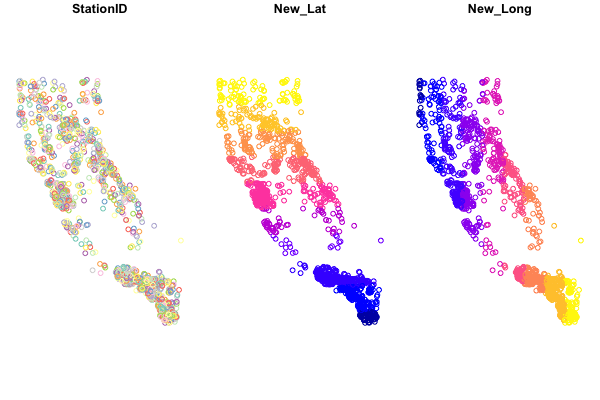
Baseplotting functions work with sf, but be aware, using plot will default to plotting a facet or map for every column of data in your dataframe. Avoid that by specifying st_coordinates() or $geometry to ensure only the spatial data gets plotted.
Plotting with plot
# single layer
plot(df_sf$geometry)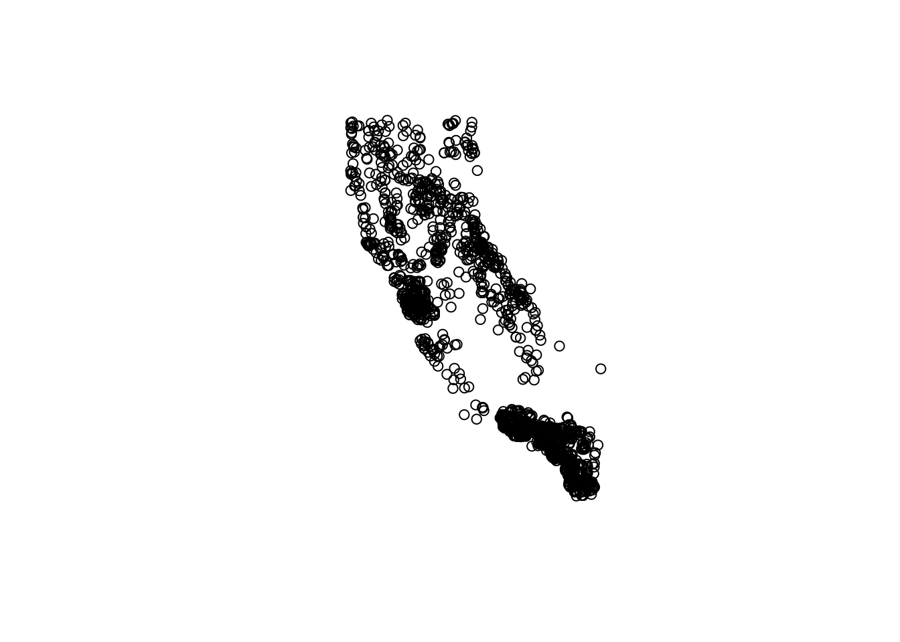
# add some flair
plot(df_sf$geometry, col = "orange")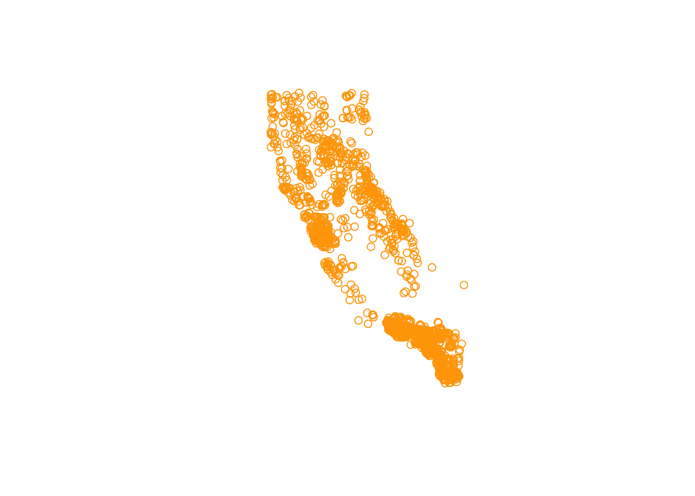
Quick Challenge:
How can we find out how to change the shape of the points using the
plotfunction?
You can make plots as fancy as you want, here are a few additional options:
# this is better
plot(st_coordinates(df_sf), pch=16, col=adjustcolor("maroon", alpha=0.7), cex=1.5, xlab = "Longitude", ylab="Latitude")
graphics::title("A Map in WGS84")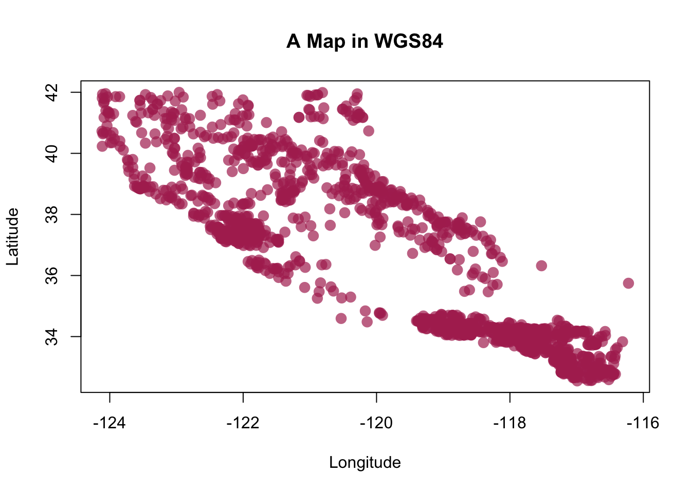
Plotting Interactive Maps
One of the nicest/coolest packages you’ll find for mapping, is the mapview package. As long as data are in an sf format, you can quickly make some very nice and interactive maps of your data/sites. First let’s see what class of data we have:
# check data is in sf format?
class(df_sf)## [1] "sf" "spec_tbl_df" "tbl_df" "tbl" "data.frame"# should say: "sf" "tbl_df" "tbl" "data.frame"
# make a map
mapview::mapview(df_sf)Pretty cool!

Figure 1: Hanging on still?
Spatial Operations
Now that we can get data into R, and transform and plot our data, what about other spatial data or operations? The sf package can do nearly all the same things you can do in GIS software, buffer, crop, clip, merge, etc. For a full list and some nice vignettes, check out the sf page: https://r-spatial.github.io/sf/, and click on the Articles tab.
There’s simply too much to show and not enough time, but below are a few bonus activities we can work through. I’ll show how to crop or clip one spatial dataset using another spatial dataset, and eventually how to read/write shapefiles and geopackages.
Get some Boundary Data for States
Now we have our data, let’s use some boundaries to crop/buffer and manipulate the data. While there are loads of options available, I’ll show two. A package called USAboundaries, which allows us to quickly download county or state outlines, in sf formats. Very handy for making some quick professional maps. Let’s get an outline of CA and add our points to a map.
library(USAboundaries)
# Pick a State
state_names <- c("california") # notice we can add more states to this list if we want
# Download STATE data and add projection
CA<-us_states(resolution = "high", states = state_names) # what does resolution do?
st_crs(CA) # double check the CRS## Coordinate Reference System:
## User input: EPSG:4326
## wkt:
## GEOGCRS["WGS 84",
## DATUM["World Geodetic System 1984",
## ELLIPSOID["WGS 84",6378137,298.257223563,
## LENGTHUNIT["metre",1]]],
## PRIMEM["Greenwich",0,
## ANGLEUNIT["degree",0.0174532925199433]],
## CS[ellipsoidal,2],
## AXIS["geodetic latitude (Lat)",north,
## ORDER[1],
## ANGLEUNIT["degree",0.0174532925199433]],
## AXIS["geodetic longitude (Lon)",east,
## ORDER[2],
## ANGLEUNIT["degree",0.0174532925199433]],
## USAGE[
## SCOPE["unknown"],
## AREA["World"],
## BBOX[-90,-180,90,180]],
## ID["EPSG",4326]]# make a quick plot!
plot(CA$geometry)
# add data from above? use "add=TRUE"
plot(df_sf$geometry, col="blue", add=TRUE)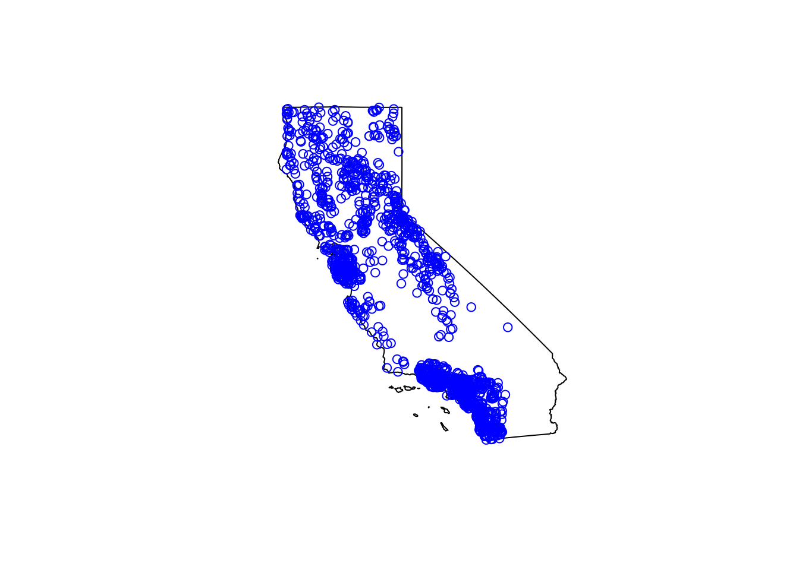
Quick Challenge:
Download the State outline for Oregon & California using the
USAboundariespackage and make a quick plot with our point data
Plotting with ggplot
Alternatively, we can use ggplot2 instead. This is where sf objects are really nice. They fit well within the ggplot framework because they are simply dataframes with a spatial list-column layout. You can plot the X/Y data as part of a geom_point layer, or you can use the geom_sf function for more complex sf objects.
So let’s load some background imagery and add it to our plot.
nicemap<-
ggplot() + # set up the framework
geom_sf(data = CA, color="gray", lwd=2) + # add the state outline using geom_sf
geom_point(data=df_sf, aes(x=New_Long, y=New_Lat), fill="orange", pch=21, alpha=0.7, size=2)+
labs(x="Longitude (WGS84)", y="Latitude", title="Map of Points") +
theme_bw() # change this to sans if it doesn't plot
nicemap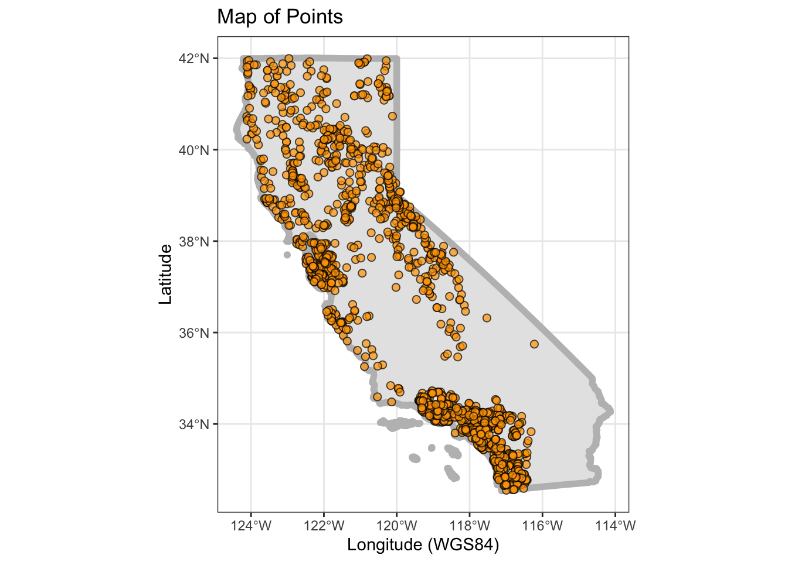
# To save plot
# ggsave(filename = "./figs/site_map_ggplot.png", width = 8, height = 6, units = "in", dpi = 300)Crop by A County and Join with CSCI Data
Ok, let’s include our other dataset and try to tie this all together. Here’s what we are going to do:
- Download county data for CA (use
USAboundariespackage) - Select a county of interest (use some
dplyr) - Crop our data to just that county (make a map)
- Join our county subset with the CSCI data
- Make an interactive plot colored by CSCI value (
mapviewandviridis)
So, first let’s grab counties for CA and subset:
# Download outlines of all the counties for California
CA_counties<-us_counties(resolution = "high", states = "CA") # what does resolution do?
# Pick a county of interest
co_names <- c("Sacramento") # notice we can add more states to this list if we want
# filter to just that county:
sacto_co <- filter(CA_counties, name==co_names)Now let’s make a test map to make sure this data works/plots:
ggplot() +
geom_sf(data=CA_counties, col="gray", alpha=0.5, lty=2) + # all counties
geom_sf(data=sacto_co, col="purple", fill="purple2", alpha=0.8)+
theme_bw()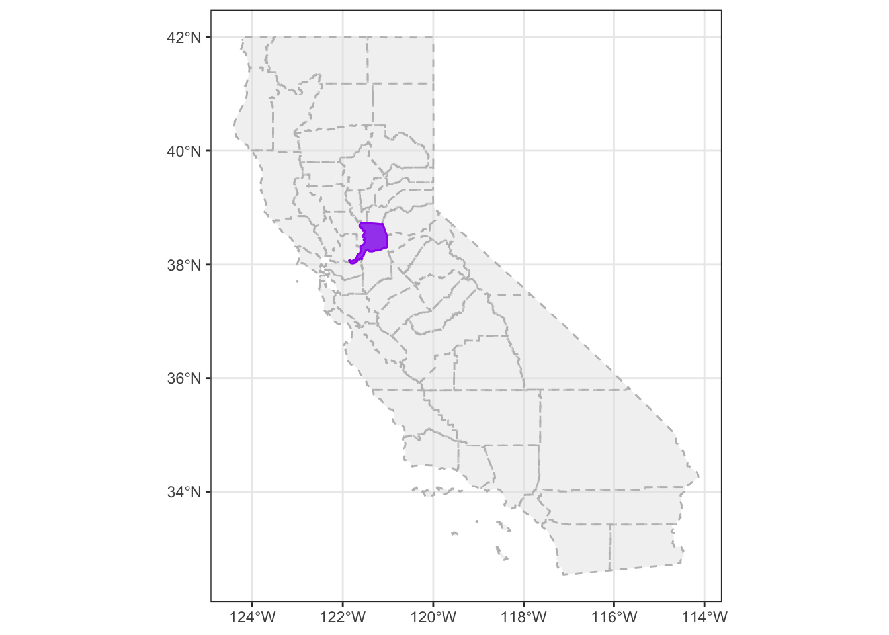
Great, we have spatial data now for counties, and we can use this to crop our existing point data.
Crop points to Sacramento County
Now we want to clip our point data down to only points in Sacramento County. The quickest way to do this is using st_intersection.
# we list the thing we want to crop down first, then what we crop by second
sacto_pts <- st_intersection(df_sf, sacto_co)
plot(sacto_co$geometry)
plot(df_sf$geometry, add=T, col="gray") # all the points
plot(sacto_pts$geometry, add=T, bg ="purple", pch=21) # just the points we cropped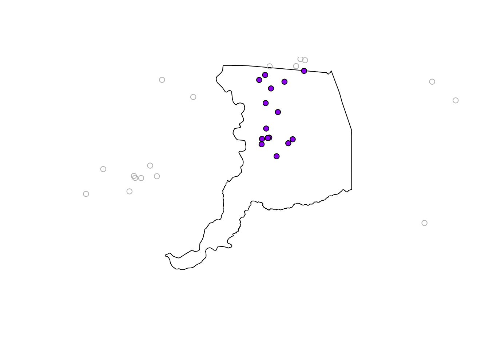
Join Data to CSCI
Now let’s join this subset of localities in Sacramento County to the data we read into R earlier. The CSCI data!
# need to specify what column we are joining by if the columns don't match exactly
sacto_csci <- left_join(sacto_pts, cscidat, by= c("StationID"="StationCode"))
plot(sacto_co$geometry, col="gray")
plot(sacto_csci$geometry, add=T, bg="purple", pch=21)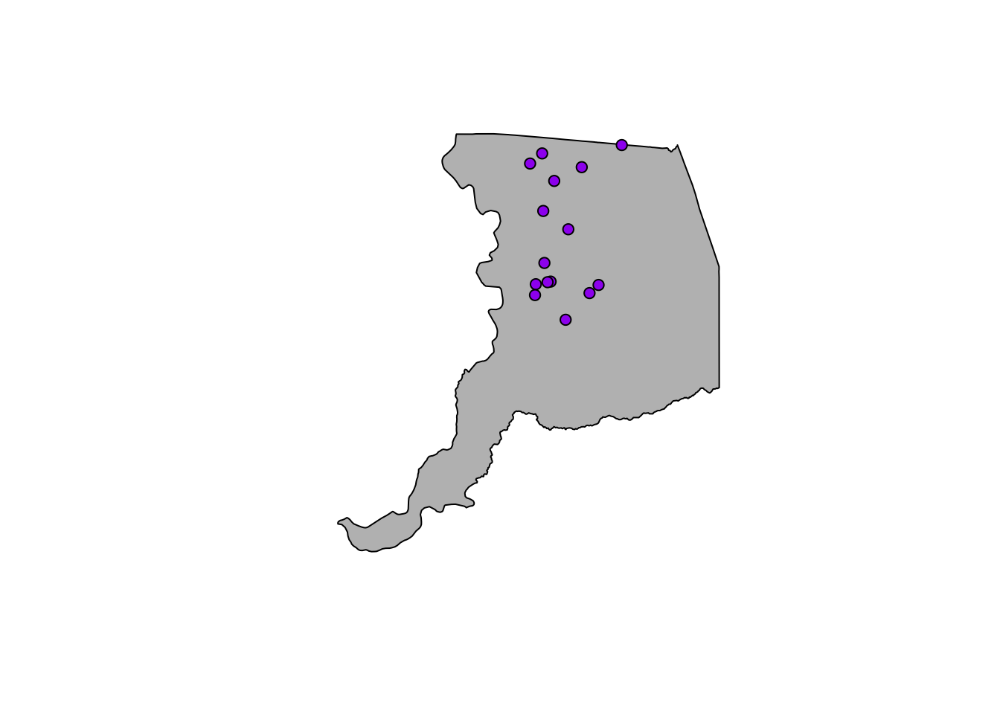
Interactive Map!
Finally, let’s make a dynamic map that shows the CSCI scores!
mapview(sacto_csci, zcol="CSCI", layer="CSCI")# add another layer by linking with "+"
mapview(sacto_co, layer="Sacramento County") +
mapview(sacto_csci, zcol="CSCI", layer="CSCI")Static Map
Challenge: Can you make the same map as below using ggplot? Hint,
viridismay be useful here…
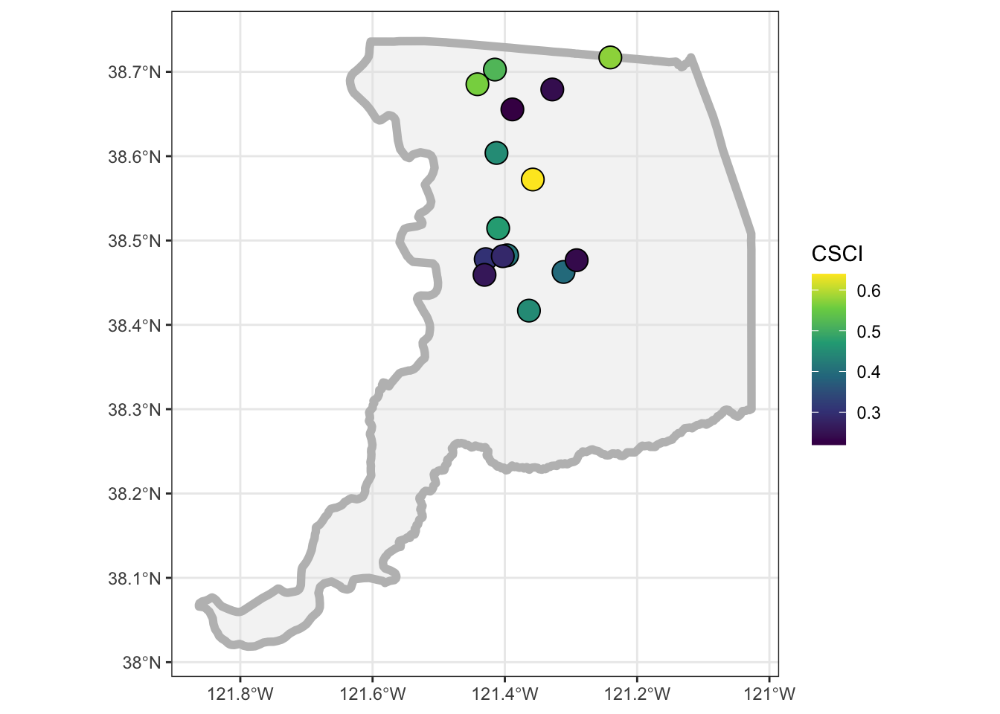
Saving Data Out & Getting it Back In
So we now can do a number of different things with spatial data, mapping, making a web map, cropping, etc. But a common task is saving spatial data for use in another program, or reading spatial data (i.e., typically shapefiles) into R.
We’ll walk through how to do that with the data we’ve used thus far.
Save into a shapefile
Shapefiles have been the de-facto data currency for spatial (vector-based) data for awhile. Newer more open-source formats are becoming easier to use (e.g., geopackage), but if you do anything spatial, you’ll have to use shapefiles at some point.
Let’s save one of our data layers into a shapefile. With the sf package, this is fairly straightforward.
# save out as a shapefile
st_write(obj = sacto_csci, "data/sacramento_co_csci.shp",
delete_layer = TRUE ) # delete the existing layer if it already exists## Deleting layer `sacramento_co_csci' using driver `ESRI Shapefile'
## Writing layer `sacramento_co_csci' to data source `data/sacramento_co_csci.shp' using driver `ESRI Shapefile'
## Writing 15 features with 24 fields and geometry type Point.# warnings are ok, typically associated with field widths or field names.
# commonly I get this:
# Warning messages:
# 1: In abbreviate_shapefile_names(obj) :
# Field names abbreviated for ESRI Shapefile driverHow can we make sure this worked? Well we can go find the folder and check that there are 4 separate files ending with .dbf, .prj, .shp, and .shx. We can also read this data back into R and plot it to make sure it looks ok.
# select the path to the shp file
tst_shp <- st_read("data/sacramento_co_csci.shp")## Reading layer `sacramento_co_csci' from data source `/Users/ryanpeek/Documents/github/TEACHING/2020_CABW_R_training/data/sacramento_co_csci.shp' using driver `ESRI Shapefile'
## Simple feature collection with 15 features and 24 fields
## geometry type: POINT
## dimension: XY
## bbox: xmin: -121.4415 ymin: 38.41687 xmax: -121.2406 ymax: 38.71707
## geographic CRS: WGS 84plot(tst_shp$geometry)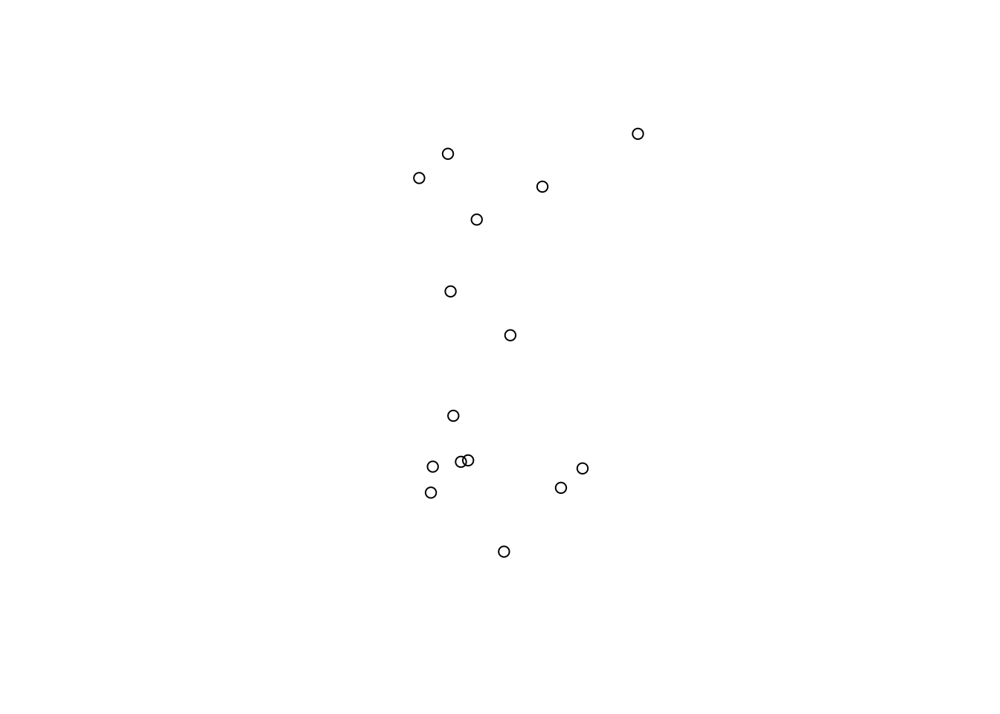
mapview(tst_shp)Interested in Learning More?
There are loads of resources…but a geospatial workshop you may want to check out is run by the Carpentries. Lessons/material are freely available here:
For data from the North American continent, and when using the
WGS84datum, keep an eye on your lat/long coordinates, especially longitude. It typically should benegative. A common snafu that can occur is a few values (or all) from the longitude column may remain positive, which means the data typically plots somewhere in the Indian Ocean. Make sure all your longitudes are negative (if in the US and using lat/longs).↩︎